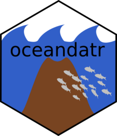

Function reference
-
get_area() - Get an a shapefile for the area of interest
-
get_bathymetry() - Get bathymetry data for the area of interest
-
get_coral_habitat() - Get coral habitat suitability data for area of interest or planning grid
-
get_enviro_regions() - Create environmental regions for area of interest
-
get_features() - Get a set of feature data for an area or planning grid
-
get_geomorphology() - Get geomorphology for an area of interest or planning grid
-
get_knolls() - Get knolls base areas for area of interest or planning grid
-
get_seamount_peaks() - Get seamount peaks for area of interest or planning grid
-
get_seamounts_buffered() - Create spatial dataset of seamount peaks buffered to a specified radius for an area of interest or planning grid